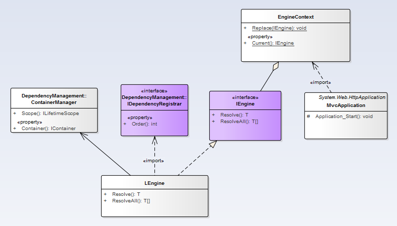

通过Autofac对接口依赖的实现进行注入，需要用到的核心类如下
在项目启动的时候初始化引擎上下文
EngineContext.Initialize(false);
在需要IOC的项目中建立DependencyRegistrar，
其作用就是调用Autofac相关的API进行依赖注入，我们只要打开这个类文件，搜索一个指定的接口，就可以找到它的依赖具体类。
public partial interface IRoleService
{
}
public partial class RoleService : IRoleService
{
}
public class DependencyRegistrar : IDependencyRegistrar
{
public virtual void Register(ContainerBuilder builder, ITypeFinder typeFinder)
{
//data layer
var dbset = DbSetting.FindOrCreate("LCL");
builder.Register(x => new EfDataProviderManager(dbset)).As<BaseDataProviderManager>().InstancePerDependency();
builder.Register(x => x.Resolve<BaseDataProviderManager>().LoadDataProvider()).As<IDataProvider>().InstancePerDependency();
var efDataProviderManager = new EfDataProviderManager(dbset);
var dataProvider = efDataProviderManager.LoadDataProvider();
dataProvider.InitConnectionFactory();
builder.Register<IEfDbContext>(c => new RbacDbContext(dbset.ConnectionString)).Named<IEfDbContext>(dbset.Name).InstancePerLifetimeScope();
//Repositories
builder.RegisterGeneric(typeof(EfRepository<>)).As(typeof(IRepository<>))
.WithParameter(ResolvedParameter.ForNamed<IEfDbContext>(dbset.name)).instanceperlifetimescope();
//services
builder.RegisterType<RoleService>().As<IRoleService>().WithParameter(ResolvedParameter.ForNamed<IEfDbContext>(dbset.Name))
.InstancePerLifetimeScope();
}
public int Order
{
get { return 5; }
}
}